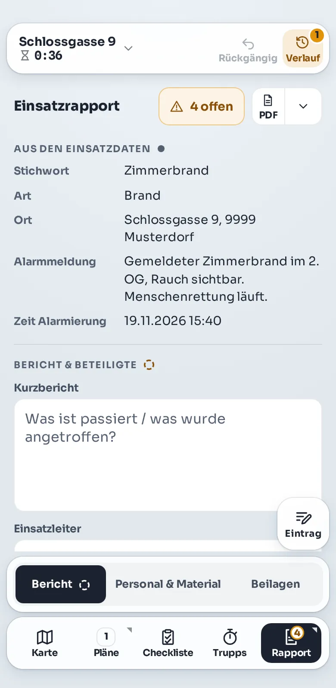

Open source · gratuito · Svizzera
La condotta d’intervento digitale per i pompieri.
KP Front è il posto di comando digitale sul posto: mappa, piani, squadre, diario e rapporto in un’unica app – su tablet, portatile e telefono.
Senza registrazione – nella demo Musterdorf sta bruciando adesso (interfaccia in tedesco)


Nato dall’attività operativa reale dei pompieri di Oberwil BL – lì collaudato e sviluppato di intervento in intervento.
Il metro di misura
«Utilizzabile alle 3 di notte – dopo sei mesi senza esercitazioni»
Nei pompieri di milizia nessuno sta al dispositivo tutti i giorni. Quindi l’app deve essere fatta in modo da usarla correttamente anche mezzo addormentati: tutto l’essenziale visibile subito, impostazioni predefinite sensate al posto delle opzioni, e ogni azione si può annullare.
Gli screenshot sono in tedesco: la demo pubblica lo è, e vengono da lì – immagini ricostruite sarebbero un’affermazione invece che una prova.
Carta della situazione su carta
Un quadro della situazione su ogni dispositivo.
Simboli tattici CSP, settori, condotte e note sulle carte swisstopo. Idranti, condotte e posizioni dei veicoli stanno sotto come livelli. L’allarme da Divera o FireHub si riprende con un tocco.
- Simboli tattici secondo la CSP – con piano, propagazione e note
- Trasporto d’acqua: pressione lungo la condotta e posizione delle pompe
- Informazioni sull’edificio e misure immediate per l’oggetto


Tabella protezione respiratoria e cronometro
Una sorveglianza che si fa sentire da sola.
Pressione, tempo di rientro e tempo dall’ultimo contatto vengono rilevati per ogni squadra. L’app avvisa prima che il margine diventi critico – anche quando nessuno sta guardando l’ora. Sul telefono come sul tablet.
- Tempo dal contatto e tempo di rientro per ogni squadra
- Emergenza protezione respiratoria subito in cima, su tutti i dispositivi
- Squadre con o senza protezione respiratoria, con il loro compito

Piano d’oggetto nel classificatore
Un piano su cui disegnare.
Aprire il piano d’intervento, disegnarci sopra, posizionare le squadre, misurare in scala – con gli stessi strumenti della carta. La pila dei piani mostra quale squadra lavora a quale piano.
- Piani d’oggetto e d’intervento del proprio corpo
- Georeferenziato: ciò che sta sulla carta sta anche sul piano
- Pila dei piani con le squadre per piano


Foglietti e memoria
Un diario che sta al passo.
Scrivere o parlare. Il diario viene solo integrato, mai riscritto: si corregge con una nuova voce, non con la gomma. I compiti aperti si ricordano da soli.
- Note vocali – come testo con un servizio di trascrizione
- Compiti aperti con promemoria
- Foglio di rilevamento via codice QR per chiunque contribuisca

Rapporto il giorno dopo
Il rapporto al rientro.
Situazione, uomini, materiale e diario confluiscono direttamente nel rapporto: controllare, completare, stampare come PDF. Per il debriefing il viaggio nel tempo riproduce tutta la notte.
- Rapporto d’intervento come PDF pronto
- Il controllo finale mostra cosa manca ancora
- Viaggio nel tempo: l’intervento minuto per minuto


Funzionamento
I vostri dati restano vostri.
KP Front è open source. Ogni corpo gestisce la propria installazione – non c’è un server centrale, e niente ci viene inviato automaticamente.
Gratuito
AGPL-3.0: nessun costo di licenza, nessun abbonamento, nessun costo per dispositivo. Restano i vostri costi di gestione e infrastruttura.
Da voi
Su un mini PC in caserma, su un vostro server o presso un fornitore cloud a vostra scelta. Funziona offline come app installabile.
Senza vincoli
Tutto il codice è aperto: gestirlo, adattarlo, svilupparlo da voi.
Su misura per voi
Uomini, veicoli, piani, liste di controllo e livelli della carta si configurano nella vostra area di amministrazione – senza programmare.
Funzionalità
Cosa c’è dentro.
Cresciuta su interventi ed esercitazioni veri, non su un elenco di funzioni. Tutto ciò che arriva da fuori – allertamento, GPS, accesso con Microsoft – è opzionale: KP Front funziona anche del tutto senza questi collegamenti.
Mappa & pianoSimboli tattici · trasporto d’acqua · merci pericolose · info edificio · misure dei gas
- Segni tattici secondo le convenzioni CSP, con attributi e diciture
- Settori, cerchi di sbarramento, superfici e disegno a mano libera
- Condotte con annotazioni CSP, ognuna assegnata a una squadra
- Misurazione di distanze e superfici, in scala anche sul piano
- Trasporto d’acqua: pressione lungo una condotta in base al profilo altimetrico, al diametro della manichetta e alla portata – il calcolo posiziona da sé le pompe e può riportarle direttamente sulla mappa
- Livelli: idranti, catasto delle condotte, servizi cartografici cantonali
- Prontuario delle sostanze pericolose: numeri ONU, informazioni sulle sostanze e indicazioni sulle distanze di isolamento e protezione, disponibili direttamente durante l’intervento
- Informazioni meteorologiche e sul vento a supporto della valutazione della situazione, più il radar delle precipitazioni di MeteoSvizzera come livello
- Piani d’oggetto come lavagna e piani sovrapposti
- Carta & oggetti: senza intervento, la carta del proprio corpo – consultare oggetti, pericoli, idranti e piani d’oggetto
- Lavagna con pagine CSP: schizzo libero, Prima coordinazione e fogli del manuale – stampati nel rapporto come l’originale
- Info edificio: dati del registro degli edifici – gas, olio combustibile, fotovoltaico – e misure immediate per l’oggetto
- Misurazioni: punti di misura con valori dei gas per locale e per piano, con cronologia e soglie d’allarme
- Georeferenziazione: collegare una planimetria alla mappa tramite punti di riferimento comuni – un solo oggetto, visibile su entrambe le superfici, con un’indicazione onesta della precisione. La stazione fa allineare le planimetrie in anticipo e le approva
- Annulla/ripristina su ogni superficie – le attività documentate restano tracciabili
Uomini & mezziSorveglianza protezione respiratoria · presenze · piano turni · condivisione posizione · materiale
- Sorveglianza della protezione respiratoria: pressione, tempo di rientro, tempo dall’ultimo contatto, allarmi
- Emergenza protezione respiratoria: una squadra in difficoltà appare subito in rosso, in cima, su tutti i dispositivi – con cronometro d’emergenza e squadra di sicurezza
- Squadre con o senza protezione respiratoria: personale, incarico e caposquadra – sulla carta, sul piano e nei piani sovrapposti, con il proprio colore di squadra, lo stesso ovunque
- Presenze con orari di arrivo e gradi
- In arrivo: chi ha confermato l’allarme Divera, direttamente sopra le presenze
- Piano turni: pianificare disponibilità e turni per persona, visualizzare la copertura dell’intero intervento e stampare i formulari di condotta
- Condividere la posizione: chi apre il link appare come punto sulla carta della situazione – volontario, e solo per questo intervento
- Condividere l’intervento tramite link; l’accesso è indicato chiaramente e può essere revocato in qualsiasi momento
- Modalità presentazione: chi ha l’intervento aperto segue lo schermo di chi presenta – tutti possono indicare, nulla viene salvato
- Materiale con scorte e consumo
- Liste di controllo per il supporto alla condotta e la direzione dell’intervento
- Ruolo capo intervento: tenere presenze, mezzi, check-list e rapporto – leggere carta e squadre senza spostare nulla
DocumentazioneDiario · viaggio nel tempo · rapporto in PDF · stampante della caserma
- Un diario che viene solo integrato e mai riscritto
- Note vocali con trascrizione, foto, promemoria
- Viaggio nel tempo: riprodurre l’intervento minuto per minuto, con le attese saltate – per il debriefing
- Rapporto d’intervento pronto in PDF, con personale, materiale, orari, diario, croquis, foto e sorveglianza della protezione respiratoria
- Stampare rapporto e piano orario direttamente sulla stampante della caserma opzionale
- Analisi per il debriefing: cifre chiave e linea del tempo su un foglio a parte, alla fine del rapporto
- Foto come allegati al rapporto
- Controllo finale: prima della chiusura, KP Front mostra quali informazioni o chiarimenti mancano ancora nel rapporto
- Organizzazioni partner con la loro osservazione nel rapporto
- Scheda di rilevamento via codice QR per tutti quelli che hanno qualcosa da aggiungere
- Orari di allarme e d’intervento dallo svolgimento invece che dalla memoria
FunzionamentoOffline · più dispositivi · ruoli · allarme · accesso Microsoft
- Funziona offline come app installabile – la verifica di prontezza indica prima dell’intervento se i dati necessari sono sul dispositivo
- Più dispositivi collegati lavorano sullo stesso stato – dopo un’interruzione della connessione, le modifiche vengono nuovamente sincronizzate
- Tre ruoli: l’aiuto alla condotta modifica tutto, il capo intervento tiene la documentazione e segue la situazione, gli osservatori leggono soltanto
- Modalità giorno/notte, dimensione dei simboli e grandi superfici di comando per il tablet
- Può riprendere allarmi da Divera o FireHub; altri sistemi di allertamento possono essere collegati tramite l’interfaccia aperta opzionale
- Posizioni dei veicoli via GPS opzionale
- Accesso con Microsoft all’account esistente, in aggiunta al PIN opzionale
- Visite agli oggetti senza intervento, offline – lista di controllo, foto e rapporto opzionale
- Area amministrativa propria per ogni corpo: uomini, veicoli, liste di controllo, livelli cartografici e modelli
Domande & risposte
Le domande più frequenti.
Perché cambiare?
Tutti vedono nello stesso momento la stessa situazione – al veicolo di comando, sul tablet e dal capo intervento. Nessun messaggio si perde su un foglietto. La sorveglianza della protezione respiratoria si fa sentire da sola prima che diventi stretta. Meno traffico radio per domande che stanno comunque sul quadro della situazione – e il rapporto è quasi pronto al rientro invece che il fine settimana dopo. KP Front aiuta la direzione dell’intervento a tenere la situazione priva di contraddizioni e a rendere visibili gli scarti: una squadra senza contatto radio, un veicolo che non sta da nessuna parte, un riscontro che non è mai arrivato.
Per quali corpi e quali interventi è pensato KP Front?
Per pompieri di milizia, corpi locali, centri di soccorso, pompieri professionisti e pompieri aziendali – in caso di incendi, incidenti della circolazione, interventi di soccorso tecnico, difesa chimica e antinquinamento e grandi eventi. KP Front è nato nell’attività d’intervento di un corpo di pompieri di milizia; per questo è fatto per persone che non lo usano tutti i giorni.
Dove vengono salvati i dati sensibili d’intervento?
KP Front è gestito da ogni corpo pompieri in proprio (self-hosted). I dati d’intervento – carta della situazione, sorveglianza della protezione respiratoria, diario e piani degli edifici – restano sulla propria installazione e sui propri dispositivi: ad esempio un mini-PC in caserma, un proprio server o un fornitore cloud scelto dal corpo. Non c’è un server centrale e nulla viene inviato automaticamente a un fornitore o a noi. I servizi di cartografia, indirizzi e meteo (tra cui swisstopo come impostazione predefinita) ricevono soltanto la posizione richiesta; gli altri servizi esterni funzionano solo se il corpo li configura.
In cosa si distingue KP Front dai sistemi commerciali?
KP Front è open source (AGPL-3.0): nessuna tassa di licenza, nessun abbonamento, nessun costo per dispositivo. Ogni corpo gestisce la propria installazione e mantiene così il controllo sui propri dati. Restano i costi propri per l’esercizio, l’infrastruttura ed eventualmente il supporto esterno. Lo sviluppo nasce direttamente dalla pratica dei pompieri di Oberwil BL; segnalazioni di errori, idee e contributi dalla comunità open source sono benvenuti.
Su quali dispositivi funziona KP Front?
KP Front funziona nel browser – senza App Store. È pensato per il tablet: su iPad e sui tablet Android si installa sulla schermata Home come un’app e funziona poi anche senza connessione. Sul portatile, nel veicolo di comando o in caserma, la stessa interfaccia si usa con mouse e tastiera. Il telefono è il compagno: guardare la situazione, registrare annotazioni, tenere d’occhio la protezione respiratoria – si disegna e si conduce sullo schermo più grande. Tutti i dispositivi mostrano lo stesso intervento.
Cosa serve per farlo funzionare?
Basta un piccolo mini-PC o server in rimessa. Per l’installazione, gli aggiornamenti e i backup serve qualcuno con esperienza nell’uso di Docker e della riga di comando, che si trovi nel corpo, in Comune o presso un supporto informatico esterno. La guida e l’area amministrativa accompagnano la configurazione. Rispondiamo volentieri alle domande generali; i dati e l’esercizio restano sotto la responsabilità di ciascun corpo.
È disponibile assistenza per l’installazione e la gestione?
Sì. Le domande generali sull’installazione e sull’utilizzo possono ricevere una risposta gratuita. KP Front può essere gestito su un’infrastruttura propria oppure presso un fornitore di hosting o cloud scelto dal corpo pompieri. Previo accordo individuale è possibile ricevere assistenza anche per l’installazione, la configurazione, gli aggiornamenti o la gestione. Un’assistenza più estesa può essere a pagamento.
KP Front funziona senza connessione a Internet?
Sì. KP Front è in linea di principio utilizzabile offline. Le mappe e gli altri dati necessari vengono salvati localmente. L’app carica da sé le mappe e i piani attorno a un intervento, poco dopo che è stato aperto – e la verifica di prontezza indica prima dell’intervento se i dati necessari sono sul dispositivo. Offline, i dati meteo e gli altri dati esterni legati al tempo corrispondono allo stato dell’ultimo aggiornamento. Più dispositivi possono essere sincronizzati tramite una connessione di rete esistente, se necessario anche all’interno di una propria rete locale senza accesso a Internet. Dopo un’interruzione le modifiche vengono sincronizzate appena la connessione è di nuovo disponibile; quanto è stato registrato nel frattempo viene conservato.
Possiamo adattarlo ai nostri processi?
Sì. Ogni corpo ha la propria area amministrativa: uomini, veicoli, dottrina e modelli si impostano liberamente lì. Liste di controllo, piani d’oggetto e livelli cartografici arrivano dai dati della vostra sede: uno alla volta si caricano nell’area amministrativa, molti insieme con gli strumenti da riga di comando forniti. E poiché tutto il codice sta su GitHub , tutto il resto si può costruire – da soli o su mandato.
KP Front funziona solo in Svizzera?
No. Come software open source, KP Front è liberamente accessibile e può essere adattato alle condizioni locali in tutto il mondo. Di fabbrica l’app è preconfigurata per la Svizzera – con le carte swisstopo, i segni tattici secondo le convenzioni CSP e i modelli CSP per la condotta d’intervento. Fuori dalla Svizzera si possono impostare altre basi cartografiche; la ricerca di indirizzi oggi supporta solo l’interfaccia swisstopo e lì va adattata.
In quali lingue è disponibile KP Front?
L’interfaccia utente di KP Front esiste in tedesco, francese, italiano e inglese. Fa stato il tedesco; le altre tre lingue sono complete, ma non sono ancora state rilette da pompieri. Essendo un’applicazione open source, KP Front può essere esteso ad altre lingue. A tal fine è necessaria una traduzione completa e verificata da specialisti della terminologia dei pompieri.
Come cominciamo?
Con la demo, senza registrazione – a Musterdorf sta già bruciando, e tutti i visitatori condividono lo stesso intervento (si riavvia due volte al giorno, alle 00:00 e alle 12:00, fuso orario Europe/Zurich). Poi provatela a un’esercitazione. Se va bene, la guida all’installazione porta alla vostra istanza.
KP Rück – il progetto gemello per il posto di comando arretrato: una lavagna per personale, veicoli e materiale. Entrambi ricevono lo stesso allarme e funzionano in modo indipendente. Guida: entrambi su un solo server →
Guarda KP RückContatto
Provatelo voi stessi.
La demo funziona senza registrazione. Volete usare KP Front da voi, oppure manca qualcosa? Scriveteci – leggiamo tutto.
Demo pubblica: non inserite dati reali su interventi, persone, luoghi od organizzazioni. Tutti i visitatori condividono la stessa demo. I dati inseriti restano salvati fino al prossimo azzeramento automatico.
Scrivere direttamente Senza un conto GitHub, o quando qualcosa non deve stare in pubblico – anche per «vorremmo provarlo da noi».
Per domande e idee ancora aperte ci sono le discussioni su GitHub.